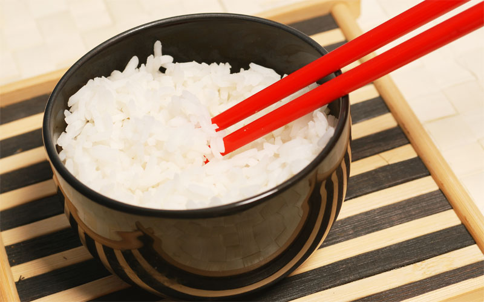

CUSTOMS, SOCIAL MANNERS & STANDARDS OF BEHAVIOR
Bowing is an important aspect of Japanese culture and Japanese children begin learning how to bow when they are young. Bows can be informal, formal or very formal each of which is progressively deeper than the previous. Apologetic bows are deeper than the others because the frequency and duration increase to reflect the sincerity and severity of the offense (Etiquette In Japan, 2012, "Bowing"). Japanese meals usually begin with an expression of thanks to those responsible for the meal such as the farmers and even the organisms being eaten and the meals are ended with thanks to the preparer. When eating, clearing the plate completely is regarded as polite. On the contrary it is impolite to pick out ingredients. Rice will usually be eaten plain but a more essential food may be added. In Japan, soy sauce isn't poured onto plain white rice but instead should be poured into a dish provided for that. It is also unusual to be eating while walking and it is not uncommon for people to drink their drinks at the vending machines (Etiquette In Japan, 2012, "Eating and Drinking"). In Japanese society, being invited into a person's home is considered an honor because many Japanese believe their homes to be too modest to receive guests. Understand that shoes are not worn inside Japanese homes to prevent tracking in any contaminants on the soles. The shoes are removed and replaced with slippers or sometimes just wearing socks is ok (Etiquette In Japan, 2012, "Visiting someone's house").Japanese culture also puts great emphasis on greetings. A lazy greeting is regarded as unworthy so students are warned to give their greetings with enthusiasm (Etiquette In Japan, 2012, "Greetings"). In Japan precedence is given to guests and as such, the guest will receive the best food, drinks, seat and have their requests submitted to. Harmony is paramount aspect of Japanese society and many place a high importance on responsibility, being polite, and working together for the good of all (Etiquette In Japan, 2012, "Hospitality"). There are some subtexts applied to various elements of Japanese behavior. Most of which are subtle and interpreted negatively. For instance, it is common practice to place one's monies in a tray provided than to hand it over to the cashier. If there is no tray the money should be given and received with both hands. This also applies to other social items. Failing to do so could be seen as an insult to the other's dignity (Etiquette In Japan, 2012, "Making Payment").  The Japanese are also particular on how to go about writing a letter and have a prescribed method for doing so. For example, blue or black ink should be used for hand written letters and black ink for correspondences written by brush. Letters written in red are interpreted as a death wish for the recipient so writing in red should not be done (Etiquette In Japan, 2012, "Letters and postcards"). Another subtext is in regards to using chopsticks. It is understood as a threat to have one's chopsticks placed pointing to another person (Etiquette In Japan, 2012, "Chopsticks").